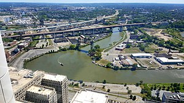
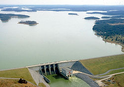

Fish Quotes
"Just keep swimming!"
"Give a man a fish and feed him for a day. Don’t teach a man to fish…and feed yourself. He’s a grown man. And fishing’s not that hard."
"No good fish goes anywhere without a porpoise."
Fish Harvest Locations

Great Barrier Reef
The Great Barrier Reef is the world's largest coral reef system.


Percy Priest Lake
Percy Priest Lake is a reservoir in north central part of Tennessee. It is formed by J. Percy Priest Dam, located between miles six and seven of the Stones River. The dam (easily visible from Interstate 40) is located about 10 miles (16 km) east of downtown Nashville and impounds a lake 42 mi (68 km) long. The lake and dam are named for Congressman Percy Priest.